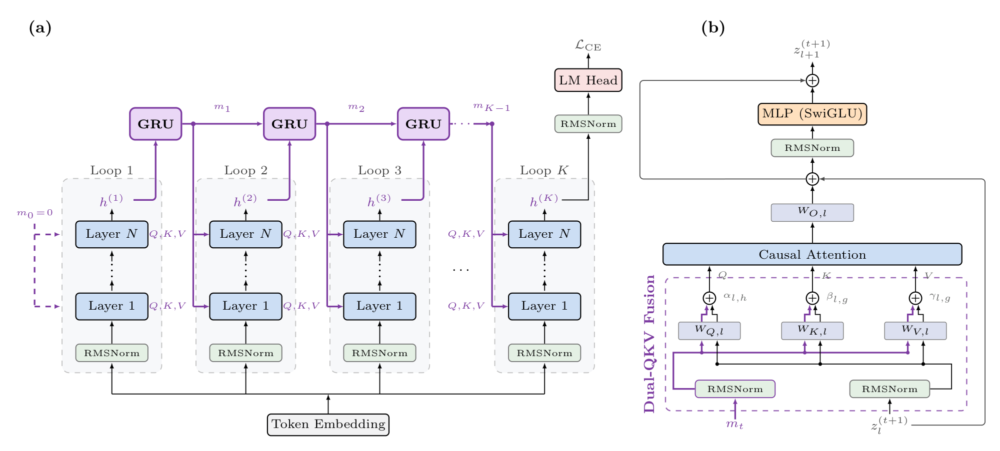
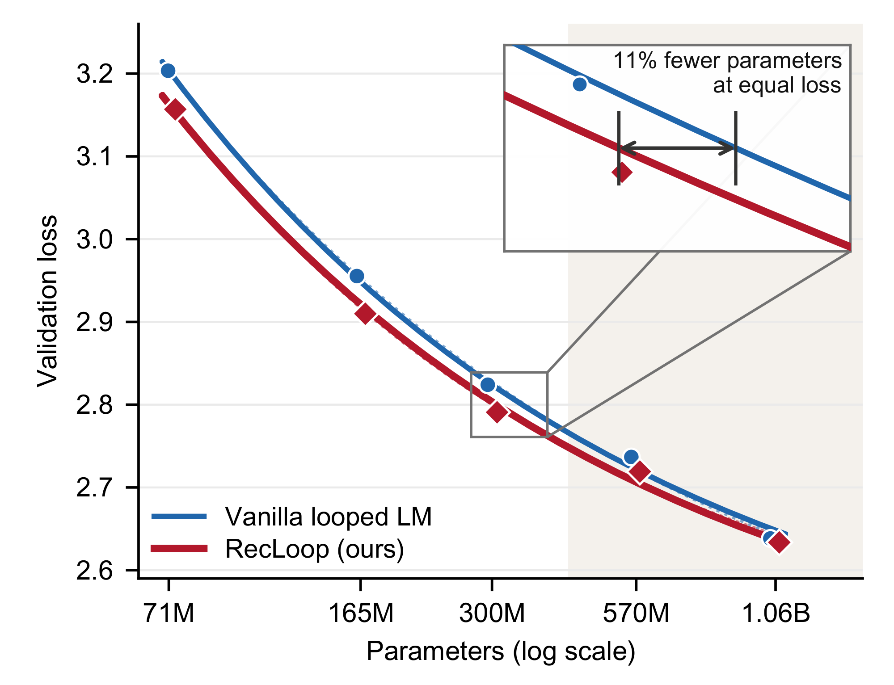
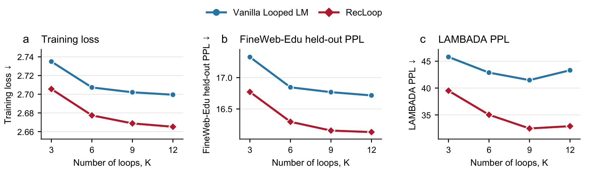
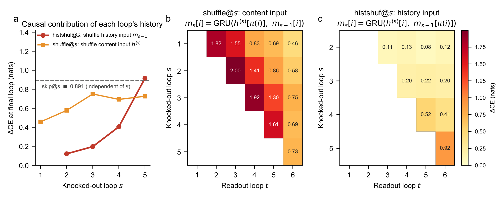

Memory across iterations. Computation with shared weights.
RecLoop
Recurrent State Modeling
for Looped Transformers
A dedicated recurrent memory lets each loop build on the history of earlier computation.
Preprint · PDF includes supplementary experiments
Give history its own state.
The working representation changes within each loop. A separate, token-aligned memory carries information across loops.

Restart the working stream
Each iteration begins from the same token embeddings, separating its computation from persistent history.
Accumulate recurrent memory
A shared residualized GRU updates a full-width, token-aligned state at the first K−1 loop boundaries.
Retrieve through Q, K, and V
Learned gates combine current-state and memory projections in all three attention pathways.
A consistent language-modeling gain.
All methods are trained from scratch on 10B FineWeb-Edu tokens using 12 shared layers, 6 loops, and an approximately 310M-parameter budget. Lower CE and perplexity are better; higher average accuracy is better.
| Method | Train CE ↓ | Held-out PPL ↓ | LAMBADA PPL ↓ | Avg. accuracy ↑ |
|---|---|---|---|---|
| Vanilla looped | 2.7073 | 16.85 | 42.88 | 43.93% |
| Residual Scaling | 2.6840 | 16.43 | 38.17 | 44.71% |
| DeepLoop | 7.5138 | 1992.8 | 2.8 × 10⁶ | 29.11% |
| SiameseNorm | 2.6792 | 16.348 | 35.04 | 44.59% |
| Parcae | 2.6654 | 16.0691 | 33.18 | 44.64% |
| Depth-Attention | 2.6871 | 16.496 | 39.43 | 44.14% |
| Block AttnRes | 2.7347 | 17.3744 | 45.89 | 43.64% |
| TMLT | 2.6962 | 16.6448 | 40.45 | 44.15% |
| MeSH | 2.6778 | 16.354 | 35.62 | 44.38% |
| RecLoop | 2.6567 | 15.9411 | 30.35 | 45.38% |
The average is over seven zero-shot downstream tasks. Task-wise gains vary; the language-modeling metrics are the primary evidence. DeepLoop did not converge under this shared training recipe and is retained for completeness.
Download the reported results as JSON

Shared weights.
Persistent history.
RecLoop also improves language modeling at every evaluated loop count, from K=3 through K=12.
Both architectures show diminishing returns with recurrent depth. RecLoop retains an advantage across the tested range.
Explore the experiments
Later loops use the accumulated history.
Inference-time interventions shuffle state vectors across token positions, preserving their values and norms while breaking alignment. Disrupting recurrent memory increases final-loop loss at every tested boundary.

The paper, in brief.
Looped language models offer a parameter-efficient way to scale computation by repeatedly applying shared Transformer blocks. Yet existing architectures commonly feed the terminal hidden state of one loop directly into the next. This naive handoff forces the same residual stream to act as both the current working representation and the sole carrier of earlier computation, encouraging later loops to revisit rather than selectively build on previous results. We introduce RecLoop, which separates these roles through explicit recurrent state modeling across loops. A shared residualized GRU accumulates a token-aligned memory at loop boundaries, and Dual-QKV Fusion combines this memory with the current working state in attention queries, keys, and values. Thus, each loop can retrieve accumulated history while all Transformer and memory-transition parameters remain shared across iterations. Controlled pretraining experiments across parameter scales and recurrent depths show that RecLoop consistently improves language modeling over matched vanilla looped Transformers, with scaling-law fits indicating approximately 11% fewer parameters at matched validation loss. Causal history knockouts further confirm that later loops use the accumulated recurrent state.
Read RecLoop.
The complete preprint brings together the method, experiments, and supplementary analyses.